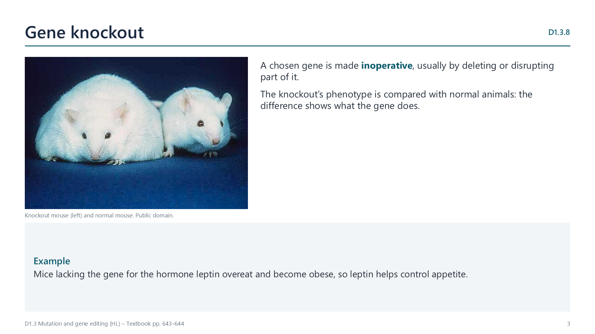

Gene knockout
pp. 643–645
A gene knockout makes a chosen gene inoperative, usually by deleting or disrupting part of it. Comparing the knockout organism with normal ones shows what the gene does: mice without p53 develop many tumours; mice without the leptin gene overeat and become obese. Libraries of knockout strains exist for model species such as mice. Results may not transfer exactly to humans, and other genes can compensate.